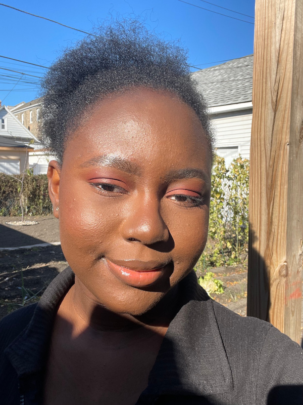

My name is Mofadesewa Atanda. Almost everyone calls me Sewa. I am a Senior majoring in Applied Analytics with Computer Science and Psychology minors. My favorite things to do are binge watch series on Netflix (read The Blacklist, Shameless, Grey's Anatomy, Criminal minds e.t.c.), read novels and buy too many skincare products. I am from Nigeria. One thing I would lke to do is travel to many places in the world. A few of the places I would love to go to are Seychelles, Zanzibar, Dakar, Mykonos, Bali and Timor Leste. I have included a picture of myself below so you can see how I look.
I will be graduating at the end of this semester and so alongside school, I am carrying out a job search. I am interested in Data Science and Analytical roles and would either love to work at a consulting firm such as Mckinsey & Co., or as an Analyst at great Tech companies such as Microsoft, Thumbstack and Google.
One last thing about me is that I love dogs. I have never owned one, but that will definitely change after I graduate. I am going to get a labradoodle as a graduation present to myself and then I will probably get 2 more later on. I might consider other breeds of dogs later on, but for now, labradoodles are my favorite. See a picture of a labradoodle below for goodluck!